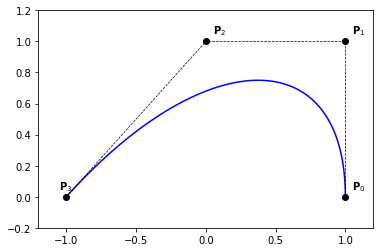
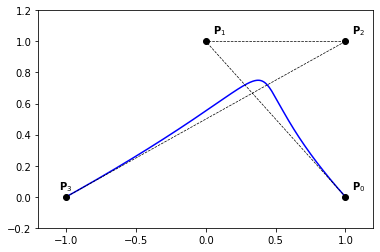
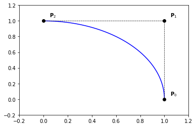
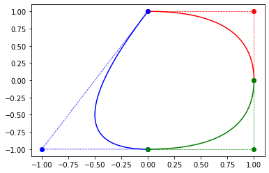

Bézier curves#
We recall the definition of a Bézier curve:
where \(\left( \mathbf{P} \right)_{0 \le k \le n}\) are the control points or Bézier points.
Evaluation of a point on Bézier curve#
The following function evaluates a Bézier curve, given the control points \(P\) at \(x\). The degree of the Bernstein polynomials is computed from the length of \(P\).
def point_on_bezier_curve(P,x):
n = len(P) - 1
b = all_bernstein(n, x)
c = 0.
for k in range(0, n+1):
c += b[k]*P[k]
return c
Examples#
Example 1
nt = 200
ts = np.linspace(0., 1., nt)
P = np.zeros((2, 2))
P[:, 0] = [0., 1.]
P[:, 1] = [1., 0.]
Q = np.zeros((nt, 2))
for i,t in enumerate(ts):
Q[i,:] = point_on_bezier_curve(P,t)
plt.plot(Q[:,0], Q[:,1], '-b')
plt.plot(P[:,0], P[:,1], '--ok', linewidth=0.7)
for i in range(0, 2):
x,y = P[i,:]
plt.text(x+0.05,y+0.05,'$\mathbf{P}_{' + str(i) + '}$')
plt.axis([-0.2, 1.2, -0.2, 1.2])

Example 2
nt = 200
ts = np.linspace(0., 1., nt)
P = np.zeros((3, 2))
P[:, 0] = [1., 1., 0.]
P[:, 1] = [0., 1., 1.]
Q = np.zeros((nt, 2))
for i,t in enumerate(ts):
Q[i,:] = point_on_bezier_curve(P,t)
plt.plot(Q[:,0], Q[:,1], '-b')
plt.plot(P[:,0], P[:,1], '--ok', linewidth=0.7)
for i in range(0, 3):
x,y = P[i,:]
plt.text(x+0.05,y+0.05,'$\mathbf{P}_{' + str(i) + '}$')
plt.axis([-0.2, 1.2, -0.2, 1.2])

Example 3
nt = 200
ts = np.linspace(0., 1., nt)
P = np.zeros((4, 2))
P[:, 0] = [1., 1., 0., -1.]
P[:, 1] = [0., 1., 1., 0.]
Q = np.zeros((nt, 2))
for i,t in enumerate(ts):
Q[i,:] = point_on_bezier_curve(P,t)
plt.plot(Q[:,0], Q[:,1], '-b')
plt.plot(P[:,0], P[:,1], '--ok', linewidth=0.7)
for i in range(0, 3):
x,y = P[i,:]
plt.text(x+0.05,y+0.05,'$\mathbf{P}_{' + str(i) + '}$')
i = 3
x,y = P[i,:]
plt.text(x-0.05,y+0.05,'$\mathbf{P}_{' + str(i) + '}$')
plt.axis([-1.2, 1.2, -0.2, 1.2])

Example 4
nt = 200
ts = np.linspace(0., 1., nt)
P = np.zeros((4, 2))
P[:, 0] = [1., 1., 0., -1.]
P[:, 1] = [0., 1., -0.5, 0.]
Q = np.zeros((nt, 2))
for i,t in enumerate(ts):
Q[i,:] = point_on_bezier_curve(P,t)
plt.plot(Q[:,0], Q[:,1], '-b')
plt.plot(P[:,0], P[:,1], '--ok', linewidth=0.7)
for i in range(0, 3):
x,y = P[i,:]
plt.text(x+0.05,y+0.05,'$\mathbf{P}_{' + str(i) + '}$')
i = 3
x,y = P[i,:]
plt.text(x-0.05,y+0.05,'$\mathbf{P}_{' + str(i) + '}$')
plt.axis([-1.2, 1.2, -0.7, 1.2])

Example 5
nt = 200
ts = np.linspace(0., 1., nt)
P = np.zeros((4, 2))
P[:, 0] = [1., 0., 1., -1.]
P[:, 1] = [0., 1., 1., 0.]
Q = np.zeros((nt, 2))
for i,t in enumerate(ts):
Q[i,:] = point_on_bezier_curve(P,t)
plt.plot(Q[:,0], Q[:,1], '-b')
plt.plot(P[:,0], P[:,1], '--ok', linewidth=0.7)
for i in range(0, 3):
x,y = P[i,:]
plt.text(x+0.05,y+0.05,'$\mathbf{P}_{' + str(i) + '}$')
i = 3
x,y = P[i,:]
plt.text(x-0.05,y+0.05,'$\mathbf{P}_{' + str(i) + '}$')
plt.axis([-1.2, 1.2, -0.2, 1.2])

Derivatives of a Bezier curve#
Using the formulae \ref{eq:bernstein-der}, we have
by reordering the indices, we get \ref{eq:bezier-curve-der}
Therefor, we get the direct acces to the first order derivatives at the extremeties of a Bézier curve using the formulae \ref{eq:bezier-curve-der-1-ext}
Second derivatives can also be computed directly from the control points using the formulae \ref{eq:bezier-curve-der-2-ext}
Definition 2 (\(r^{th}\) forward difference)
Let us consider a set of (control) points \(\mathbf{P}\).
The \(r^{th}\) forward difference of \(\mathbf{P}\) is defined as
$\(
\begin{align}
\triangle^r \mathbf{P}_i := \triangle^{r-1} \mathbf{P}_{i+1} - \triangle^{r-1} \mathbf{P}_i
\end{align}
\)\(
with
\)\(
\begin{align}
\triangle \mathbf{P}_i = \triangle^1 \mathbf{P}_i := \mathbf{P}_{i+1} - \mathbf{P}_i
\end{align}
\)$
Proposition 2 (High order dirivatives)
Eqs (\ref{eq:bezier-curve-der-1-ext}) and (\ref{eq:bezier-curve-der-2-ext}) can be generelaized for high order derivatives. We have in fact the following result:
Remark 1
The derivatives of a Bézier curve at its extremeties up to order \(r\) depend only on the first (or last) \(r+1\) control points, and vice versa.
Proposition 3
\label{prop:bezier-forward-difference} $\(\triangle^r \mathbf{P}_0 = \sum\limits_{i=0}^{r} \left( -1 \right)^{r-i} \binom{r}{i} \mathbf{P}_i \)$
Integration of Bezier curves#
Proposition 4
A primitive of A Bézier curve \(\mathcal{C}(t) = \sum_{k=0}^n \mathbf{P}_k B_k^n(t)\) has the Bézier representation
where
Here, \(\mathbf{Q}_{0}\) denotes an arbitrary integration constant.
Remark 2
Using Eq. (\ref{eq:bezier-primitive}), we have \(\int_0^1 \mathcal{C}(t)~dt = \frac{1}{n+1}\left( \sum\limits_{i=0}^n \mathbf{P}_i \right)\).
Properties of Bezier curves#
Because of the symmetry of the Bernstein polynomials, we have
\(\sum_{k=0}^n \mathbf{P}_k B_k^n = \sum_{k=0}^n \mathbf{P}_k B_{n-k}^n\)
Thanks to the interpolation property, for \(B_0^n\) and \(B_n^n\), of the Bernstein polynomials at the endpoints, we get
\(\mathcal{C}(0) = \mathbf{P}_0\) and \(\mathcal{C}(1) = \mathbf{P}_n\)
Using the partition unity property of the Bernstein polynomials, we get
any point \(\mathcal{C}(t)\) is an affine combination of the control points
Therefor,
Bézier curves are affinely invariant; i.e. the image curve \(\Phi(\sum_{k=0}^n \mathbf{P}_k B_k^n)\) of a Bézier curve, by an affine mapping \(\Phi\), is the Bézier curve having \(\left( \Phi(\mathbf{P}_i) \right)_{0 \le i \le n}\) as control points.
due to the partition unity of the Bernstein polynomials and their non-negativity,
any point \(\mathcal{C}(t)\) is a convex combination of the control points
finally, we get the convex hull property,
A Bézier curve lies in the convex hull of its control points
DeCasteljau Algorithm#
In this section, we introduce the deCasteljau algorithm Algo. (\ref{algo:decasteljau}). The basic idea comes from the following remark; using the reccurence formulae Eq. (\ref{eq:bernstein-rec}), we have
Algorithm 1 (Evaluation of a Bézier curve, defined by its control points \(\mathbf{P}\) at \(x\))
Input \(\mathbf{P}, x\) Output \(value\)
\(n \gets { len } \left( \mathbf{P} \right) - 1\)
\(\mathbf{Q} \gets \mathbf{P}\)
For \(j \gets 0\) : \(n\)
For \(i \gets 0\) : \(n-j\)
$Q[i] \gets (1-x) Q[i] + x Q[i+1]$
Return \(Q[0]\)
def decasteljau(P, x):
n = len(P) - 1
Q = P.copy()
x1 = 1.-x
for j in range(1, n+1):
for i in range(0, n-j+1):
Q[i] = x1*Q[i] + x*Q[i+1]
c = Q[0]
return c
Conversion from monomial form#
Let us consider a monomial representation of a curve
Since
we get,
hence,
which is a Bézier curve of the form
with
Remark 3
If \(\mathbf{Q}_k = 0\) for all \(k \geq 2\), then the control points are given by \(\mathbf{P}_k = \mathbf{Q}_0 + k \mathbf{Q}_1\).
Proposition 5 (Linear Precision)
Conversly, if the \(n+1\) control points \(\mathbf{P}\) lie equidistantly on a line, then \(\mathcal{C}\) is a linear polynomial, which can be written as \(\mathcal{C}(t) = \left(1-t\right) \mathbf{P}_0 + t \mathbf{P}_n\).
Conversion to monomial form#
Given a Bézier curve \(\mathcal{C}(t) = \sum_{k=0}^n \mathbf{P}_k B_k^n(t)\), we can derive its monomial representation using the Taylor expansion,
Rational Bézier curves#
We first introduce the notion of Rational Bernstein polynomials defined as, and \(w_i > 0, \forall i \in \left[0, n \right]\)
Proposition 6 (Properties of Rational Bernstein polynomials)
\(R_k^n(x) \ge 0\), for all \(k \in \left[0, n \right]\) and \(x \in \left[ 0, 1 \right]\) \hfill [positivity]
\(\sum_{k=0}^n R_k^n(x) = 1\), for all \(x \in \left[ 0, 1 \right]\) \hfill [partition of unity]
\(R_0^n(0) = R_n^n(1) = 1\)
\(R_k^n\) has exactly one maximum on the interval \(\left[ 0, 1 \right]\),
Bernstein polynomials are Rational Bernstein polynomials when all weights are equal
Definition 3 (Rational Bézier curve)
where \(R_k^n(t) := \frac{w_i B_k^n(t)}{\sum_{i=0}^n w_i B_i^n(t)}\) and \(w_i > 0, \forall i \in \left[0, n \right]\)
Example#
Example 6
nt = 200
ts = np.linspace(0., 1., nt)
P = np.zeros((3, 2))
P[:, 0] = [1., 1., 0.]
P[:, 1] = [0., 1., 1.]
# weights
W = np.asarray([1., 1., 2.])
# weithed control points in 3D
Pw = np.zeros((3,3))
for i in range(0, 3):
Pw[i,:2] = W[i]*P[i,:]
Pw[i,2] = W[i]
Qw = np.zeros((nt, 3))
for i,t in enumerate(ts):
Qw[i,:] = point_on_bezier_curve(Pw,t)
Q = np.zeros((nt, 2))
Q[:,0] = Qw[:,0]/Qw[:,2]
Q[:,1] = Qw[:,1]/Qw[:,2]
plt.plot(Q[:,0], Q[:,1], '-b')
plt.plot(P[:,0], P[:,1], '--ok', linewidth=0.7)
for i in range(0, 3):
x,y = P[i,:]
plt.text(x+0.05,y+0.05,'$\mathbf{P}_{' + str(i) + '}$')
plt.axis([-0.2, 1.2, -0.2, 1.2])

Composite Bézier curve#
Example 7
n = 2
nt = 200
ts = np.linspace(0., 1., nt)
# ...
P = np.zeros((3, 2))
P[:, 0] = [1., 1., 0.]
P[:, 1] = [0., 1., 1.]
Q = np.zeros((nt, 2))
for i,t in enumerate(ts):
Q[i,:] = point_on_bezier_curve(P,t)
plt.plot(Q[:,0], Q[:,1], '-r')
plt.plot(P[:,0], P[:,1], '--or', linewidth=0.7)
# ...
# ...
P = np.zeros((3, 2))
P[:, 0] = [0., -1., 0.]
P[:, 1] = [1., -1., -1.]
Q = np.zeros((nt, 2))
for i,t in enumerate(ts):
Q[i,:] = point_on_bezier_curve(P,t)
plt.plot(Q[:,0], Q[:,1], '-b')
plt.plot(P[:,0], P[:,1], '--ob', linewidth=0.7)
# ...
# ...
P = np.zeros((3, 2))
P[:, 0] = [1., 1., 0.]
P[:, 1] = [0., -1., -1.]
Q = np.zeros((nt, 2))
for i,t in enumerate(ts):
Q[i,:] = point_on_bezier_curve(P,t)
plt.plot(Q[:,0], Q[:,1], '-g')
plt.plot(P[:,0], P[:,1], '--og', linewidth=0.7)
# ...
